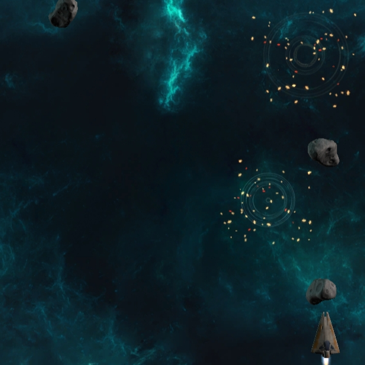

| GAME: SPACE SHOOTER | GAME: PLANET ZOMBALIEN |
|---|---|
|
A game developed during my time studying at the Western Sydney University. A simple game that allowed me to gain introductory skills into the Unity engine, as well as learning more indepth about JavaScript and C# coding, as they are the main two languages of Unity. All assets were provided by Unity themselves as this is an tutorial on their website.
Scripts created for this project:  |
My first independently developed game that I created as part of my game development unit at the Western Sydney University. I am proud of it, even if there are some kinks and bugs that would need to be worked out in a future re-release and a redoing of the art. It taught me an amazing amount about the systems of Unity, such as sound controllers, animation and sprite creation. This was overall very fun and very stressful to work on, and I achieved a 73 for this project.
Scripts created for this project: |
|
Controls: WASD to move, left-click to fire
Play |
Controls: WASD to move, left-click to fire, space to jump
Play |
| PROTOTYPE: 2D ACTION RPG | PROTOTYPE: 3D ISOMETRIC RPG |
|
A project I worked on that adapted a random generation script that I created. The random generation script would sometimes only create the branching blocks and I have a variable to control these blocks appearing. The current build always creates these branching blocks as it led to more complex mazes and more interesting gameplay, so I decided to keep it. The grid size is also scalable and adjusts accordingly. The spawn of "ore veins", which are currently the pink squares, can also be altered to increase as the game progresses, but this is still currently a prototype that needs a lot of AI, art and sound work. I am hoping to progress this into a rogue-like with unlockable abilities and characters that may be able to be played on a mobile as well as consoles and desktops.
Scripts created for this project: |
I have always enjoyed playing Action RPG games such as the Diablo series, so I attempted to get a start on something in that genre. Unity recently added the Navmesh function that allows developers to have more advanced AI that can roam around a map and avoid obstacles and this is the result of working with that new feature. This is still a very early prototype, but I hope you can see what I am aiming for. I plan to make it magically based, with you playing as a wizard and collecting spells that you can upgrade as you adventure through a dungeon.
Scripts created for this project: |
|
Controls: WASD to move, space to mine near purple squares
Play |
Controls: Left-click to move, right-click to fire
Play |
| THIS WEBSITE | |
| I have built this website from scratch in an effort to refine my coding skills and learn more about what HTML5 and CSS is capable of now. The code itself is amateurish but the website itself looks stylish and minimalistic, and there are no serious errors. I would like to adapt and create a mobile version at some stage, as well as test on multiple different browsers and experiment with more transitions and effects. |